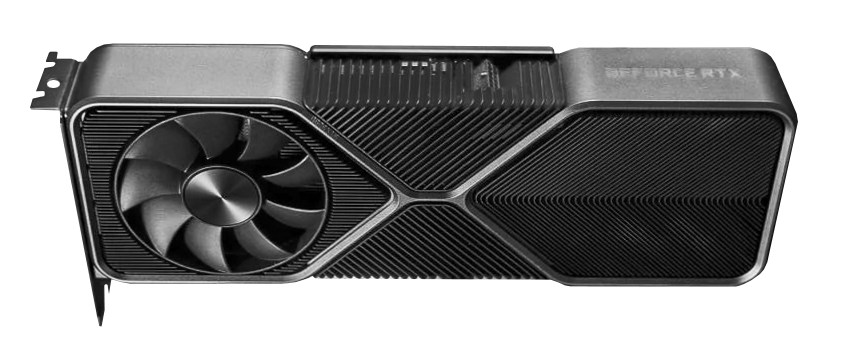

This page is to showcase the top 3 graphics card in December of 2020 and provide some information of why those are the top 3.
Top 3 Graphics Card in December 2020 |
|---|
|

First place: RTX 3090 |

Second place: RX 6900XT |
|
Third place: RX 6800XT |
Recent tech news |
|---|
Nvidia RTX 3080 Ti reportedly delayedNvidia's RTX 3080 Ti has reportedly been delayed from January to February as the company continues to try and meet high demand for its current crop of cards. |
Nvidia RTX 3060 releasing in January 2021Nvidia is pushing the lower-mid-range RTX 3060 cards with 12 GB for an early January release. |
AMD extends production of the RX 6000 series to address its stock shortageAfter the RX 6000 series sold out instantly at launch, there were rumours that had discontinued the production of its reference cards for the RX 6000 series. However, general manager of AMD Radeon, Scott Herkelman, stating on Twitter that production of the reference cards had been extended “indefinitely due to popular demand.” |
New Game Release |
|---|
|
1: Cyberpunk 2077 |
|
2: Chronos: Before The Ashes |
|
3: Worms Rumble |
|
4: Haven |
|
5: Immortals Fenyx Rising |